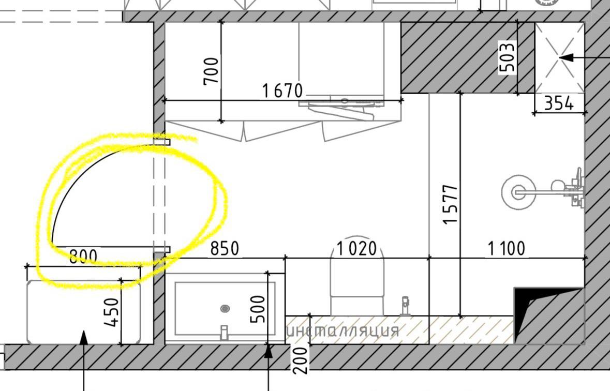

Светлый камень
Матовый керамогранит на полу и стенах. Формат 600 × 1200 мм — идея для подбора, раскладка после обмера.
САНУЗЕЛ У ВХОДА / КОНЦЕПЦИЯ 01
Ваша расстановка — в деталях. Светлая плитка, дубовые фасады и спокойный свет для разных моментов дня.
Собираем санузел…
ПАЛИТРА И ФАКТУРЫ
Матовый керамогранит на полу и стенах. Формат 600 × 1200 мм — идея для подбора, раскладка после обмера.
Влагостойкие фасады под дуб на тумбе и шкафу. Утопленные ручки, минимум визуальных швов.
Смеситель, душ и аксессуары в одном оттенке. Прозрачное стекло сохраняет объём помещения.
ПЛАН / СВЕТ / ПОДКЛЮЧЕНИЯ
Высоты указаны от чистого пола. Пунктиры показывают логику управления, а не трассы кабелей.
СВЕТ
Четыре потолочные точки дают общий свет. Вертикальные световые линии по краям зеркала освещают лицо. Отдельная точка над душем и подсветка под тумбой работают мягче вечером.
Для подбора: тёплый свет 3000 K, у зеркала CRI ≥ 90. Яркость и оптику уточним по отделке и выбранным светильникам. В 3D показано настроение, а не светотехнический расчёт.
ХРАНЕНИЕ И БЫТ
В высоком шкафу — полотенца и бытовые принадлежности. В узкой нише справа от шахты — душевые средства. Подвесная тумба и унитаз облегчают уборку.
Стиральная машина и сушилка пока не заложены: назначение шкафа сохраняю как на вашей схеме. При необходимости добавим технику и отдельные подключения.
ИНЖЕНЕРНЫЕ ИДЕИ
Предлагаю питание зеркала, две бытовые розетки у входной стороны тумбы, питание подсветки и вывод вентилятора к существующему каналу. Выключатели — снаружи санузла.
Места розеток — кандидаты. Электрик должен проверить зоны относительно душа, защиту, заземление и подходящее исполнение оборудования. Для цепей ванной предусматривают дополнительную дифференциальную защиту до 30 мА; окончательное решение — по применимым нормам и проекту.
Принципы защиты в ванной · Schneider Electric ↗
ИСТОЧНИК ГЕОМЕТРИИ
Использован присланный фрагмент. Размеры соседей временные: 2970 × 2280 мм — общий прямоугольный габарит, а не чистая площадь с вычетом шахты. После ваших измерений поправим стенки, оборудование и монтажные отметки.
Эта страница — дизайн-концепция для обсуждения, без кабельных трасс, расчёта нагрузок и задания на монтаж.
Полный план соседей ↗